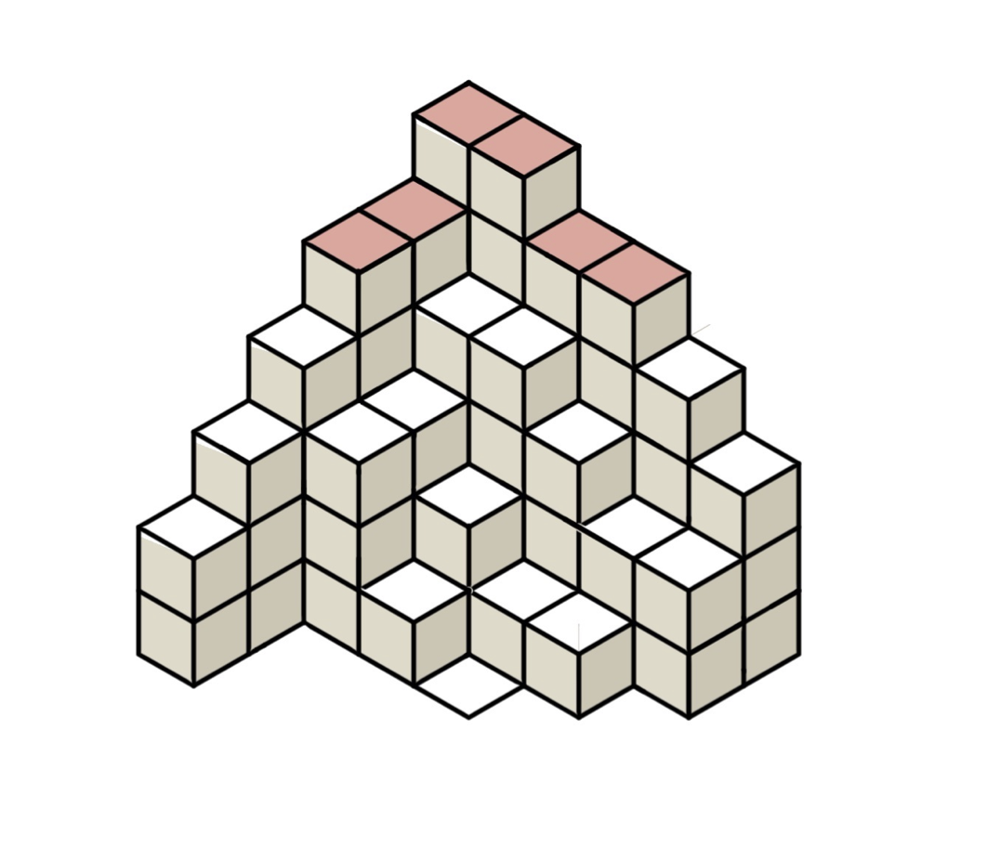
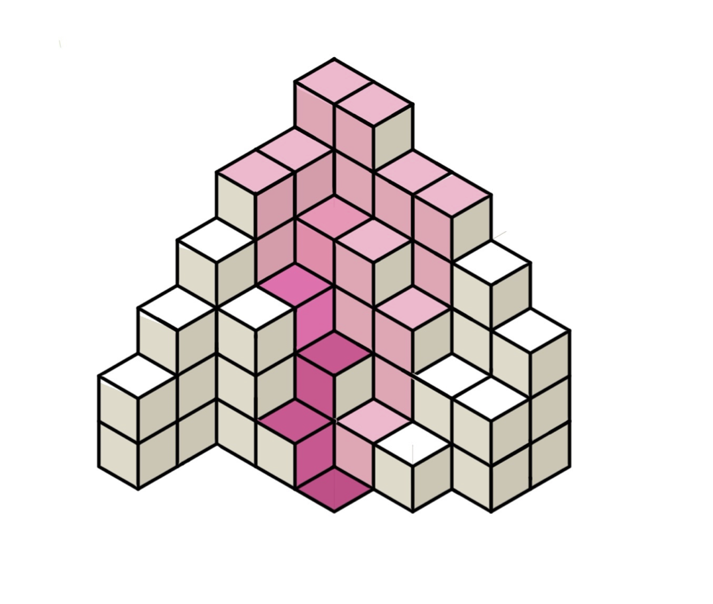
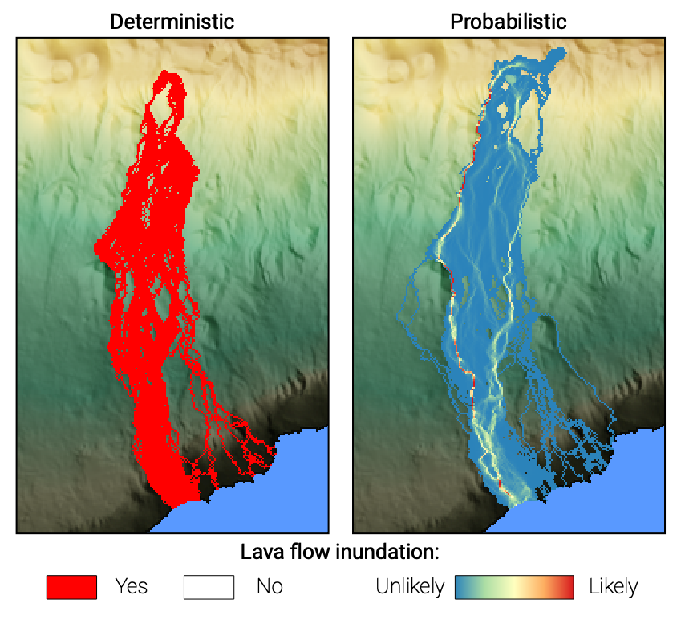

Probabilistic modelling: Part 1
Attempting to predict the behaviour of future hazardous events is inherently associated with uncertainties. We will never be able to predict exactly what will happen in the future, so we need to use a modeling framework that allows for uncertainty quantifications. This is where probabilistic modeling enters the show. Probabilistic modeling allows exploring a range of possible future outcomes rather than a a unique realisation.
Objectives
- Introduction to probabilistic hazard modeling
- Application of a frequentist approach to lava flow inundation
Probabilistic modelling
Let's go back to the fictional DEM used in the previous exercise. As we saw from existing literature, monogenetic field such as the recent activity at La Palma imply that future eruptive event will take place from a new vent. Imagine that all the red pixels in Figure 1 represent coordinates where the next vent can potentially open. How do we account for the uncertainty associated with vent location when quantifying the hazard of a future eruption?

The idea here is that we will not model only one realisation of an event - here one lava flow originating from a single location - but many, and that we will average all their contributions. Unlike what we saw when using the path of steepest descent, we will assess the flow trajectory initiating from all pixels in Figure 1.

Figure 2 shows the overlay of the path of steepest descent computed from each of the 6 pixels identified in Figure 1. What do we see?
- Some pixels in Figure 2 are inundated regardless of the initialisation point (→ darker shades of pink).
- Conversely, other pixels are inundated only for selected inundation points (→ lighter shades of pink).
Therefore, darker pixels have higher probabilities of inundation than others. Using a frequentist approach, we can calculate the probability \(P(x,y)\) of a pixel to be inundated by counting how many times a pixel is hit and normalising this count by the total number of runs, where \(x\) and \(y\) are the pixel's coordinates:
Where \(N_{r}\) is the total number of runs and \(n_{i}\) is defined as:

So, from Figures 2 and 3:
- A pixel hit once (\(n_{i} = 1\)) over the six simulations (\(N_{r} = 6\)) has a probability \(P(x,y) = \frac{1}{6} = 0.17\) (or 17%).
- A pixel hit twice (\(n_{i} = 2\)) over the six simulations has a probability \(P(x,y) = \frac{2}{6} = 0.33\) (or 33%).
Deterministic vs probabilistic modeling
This new probabilistic modeling strategy is different than a deterministic modeling approach:
- Deterministic modelling: one user-defined value for each model input → one model run → one outcome.
- Probabilistic modelling: range of values for each model input → many model runs with input conditions sampled in ranges → aggregation of all outcomes into probabilities.
In other terms:
- Deterministic modelling: The output is entirely determined by the input values.
- Probabilistic modelling: The output accounts for a degree of randomness/uncertainty.
Figure 4 illustrates the different hazard outputs obtained from deterministic (left) and probabilistic (right) modelling strategies for lava inundation.

Probabilistic lava flow hazard modeling for La Palma
For the case of lava flow inundation hazard in La Palma, we will explore how the uncertainty on the vent location will affect possible inundated areas. This flowchart illustrates how we will account for an uncertainty in vent location using a probabilistic hazard modeling approach and how it contrasts with a deterministic strategy.

Gambling-driven science
This type of random sampling is often referred to as Monte Carlo simulations. This name comes from the Monte Carlo casino in Monaco, where a lot of probability theories were developed around gambling. Stochastic sampling is also a synonym of random sampling.
Summary
Here, we have reviewed how probabilistic modelling allows to1:
- Account for uncertainties in the model's input parameters.
- Quantify hazard outputs as probabilities rather than occurrences.
In the next exercise, we will use Q-LavHA, a probabilistic model, to quantify the probability of lava flow inundation for various vents in La Palma.
References
-
Bonadonna, C., 2006. Probabilistic modelling of tephra dispersion, in: Mader, H.M., Coles, S.G., Connor, C.B., Connor, L.J. (Eds.), Statistics in Volcanology. Geological Society of London, London, pp. 243‚Äì259. ↩